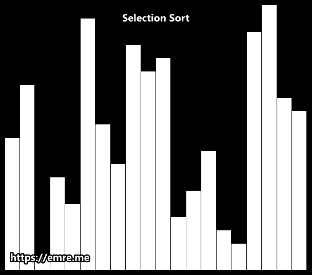
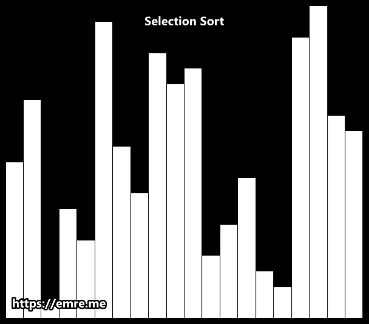

Sorting in C++
Sorting comes in handy in many different scenarios , whether you want to solve any competetive problem or when it comes to any sort of logic in a program which requires sorting. While the algorithm library in the STL has a function called sort() which will sort any vector-like object with the quickest speed, however it is important to know how the basic logic of sorting works and be able to write your own custom sort function when the need arises. We will now see some algorithms of sorting.
Bubble Sort
Bubble sort is the simplest technique in which we compare every element with its adjacent element if they are not in order. This wat at the end of every iteration(called a pass), the heaviest element gets bubbled up at the end of the list.

As seen above since it's a small array and was almost sorted we managed to get a completely sorted array in a few passes.
Below is the implementation in C++:
#include<iostream>
#include<vector>
using namespace std;
int checkSort(vector a, int length)
{
int flag = 1;
for(int i=0; i < length-1; i++)
{
if(a[i] > a[i+1])
flag = 0;
}
return flag;
}
int main(){
int n;
cout << "Enter the length of the list: ";
cin >> n;
vector a(n);
cout << "Enter the elements, separated by space: " ;
for(int i=0; i < n; i++)
cin >> a[i];
int count = 0;
while(checkSort(a, n)!=1)
{
for(int i = 0; i < n-1; i++)
{
if(a[i] > a[i+1])
{
int temp = a[i];
a[i] = a[i+1];
a[i+1] = temp;
}
}
for(int i=0; i < n; i++)
cout << a[i] << " " ;
cout << endl;
count++;
}
cout << "No of passes: " << count << endl;
cout << endl;
return 0;
}
Output: Enter the length of the list: 4 Enter the elements, separated by space: 4 3 2 1 3 2 1 4 2 1 3 4 1 2 3 4 No of passes: 3
As seen from the output, in bubble sort technique, with every pass the heaviest element is bubbled up to the end of the array thereby sorting the array completely.
Selection Sort
This is a method in which we find the smallest element in the array and put it in its correct position after each comparision. At each pass, the next smallest element is selected and places in its proper position.
 

The code in c++ for this sorting algorithm :
#include<iostream>
#include<vector>
#include<limits.h>
using namespace std;
void swap(int &a, int &b)
{
int temp = a;
a = b;
b = temp;
}
int main(){
int n;
cout << "Enter no of elements in list to be sorted: ";
cin >> n;
vector a(n);
cout << "Enter the elements, separated by space: ";
for(int i=0; i < n; i++)
cin >> a[i];
vector b(n);
for(int i = 0; i < n; i++)
{
int m = INT_MAX;
for(int j = i; j < n; j++)
{
m = min(m, a[j]);
}
for(int j = 0; j < n; j++)
{
if(m == a[j])
{
swap(a[i], a[j]);
}
}
}
cout << "Sorted list of elements: " ;
for(int i = 0; i < n; i++)
cout << a[i] << " ";
cout << endl;
return 0;
}
Output:
Enter no of elements in list to be sorted: 5
Enter the elements, separated by space: 5 4 3 2 1
Sorted list of elements: 1 2 3 4 5